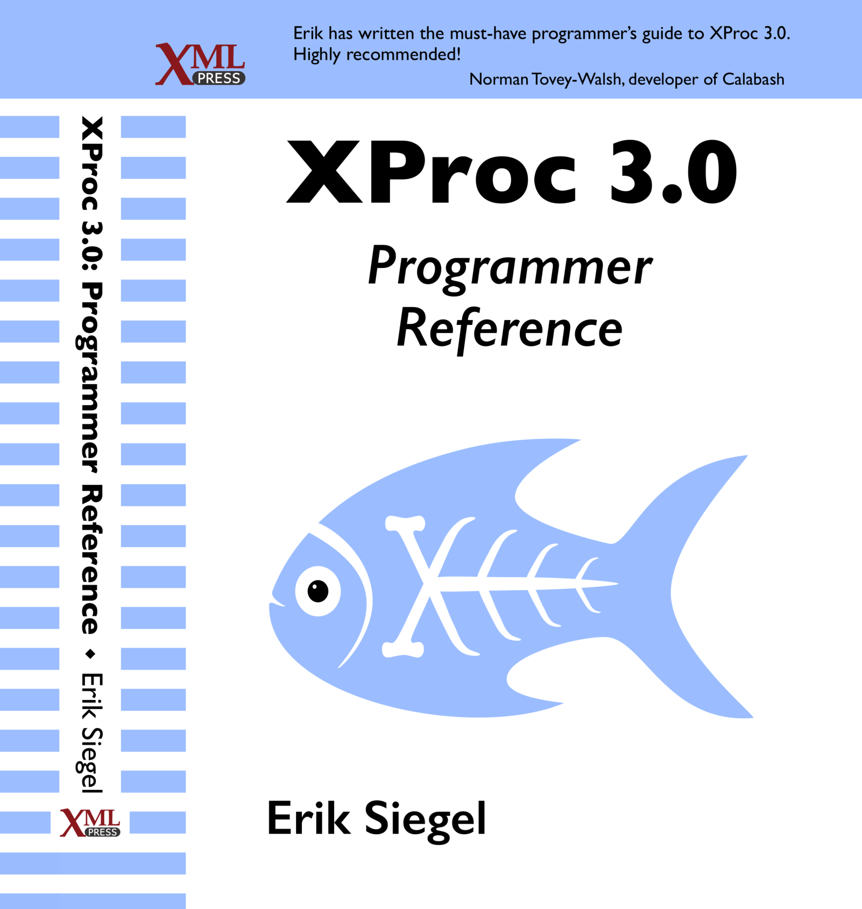

XProc 3.0 - Learning
Book
The XProc 3.0 Programmer Reference by Erik Siegel is available for sale here.
XProc 3.0 101
Introductory learning materials about XProc 3.0:
- Articles:
- An Introduction to XProc 3.0 (Erik Siegel on xml.com)
- XProc 3.0 - Connecting steps using ports (Erik Siegel on xml.com)
- Conference proceedings:
- Recorded conference talks:
- XProc 3.0: Ready or Not (Norman Tovey-Walsh at XML Prague 2020)
- Webinars:
- XProc 3.0 101 - Part 1 (Erik Siegel at Markup UK 2020)
- XProc 3.0 101 - Part 2 (Erik Siegel at Markup UK 2020)
XProc 3.0 Advanced
Information about the more advanced usage of XProc 3.0:
- Conference proceedings
- Non-XML workflows with XProc 3.0 (Achim Berndzen at Markup UK 2018)
- Webinars:
- Working with JSON in XProc 3.0 (Achim Berndzen at Markup UK 2020)
- Dealing with ZIP Documents in XProc 3.0 (Erik Siegel at Markup UK 2020)
- Text Documents in XProc 3.0 (Achim Berndzen at Markup UK 2020)
XProc 3.0 History
Materials from XProc 3.0's illustrious history:
- Recorded conference talks:
- Excellent XProc 3.0 (Erik Siegel at XML Prague 2019)
- XProc 3.0 (Achim Berndzen, Gerrit Imsieke and Norman Tovey-Walsh at XML Prague 2018)
- The state of XProc 3.0 (Norman Tovey-Walsh at XML Prague 2017)